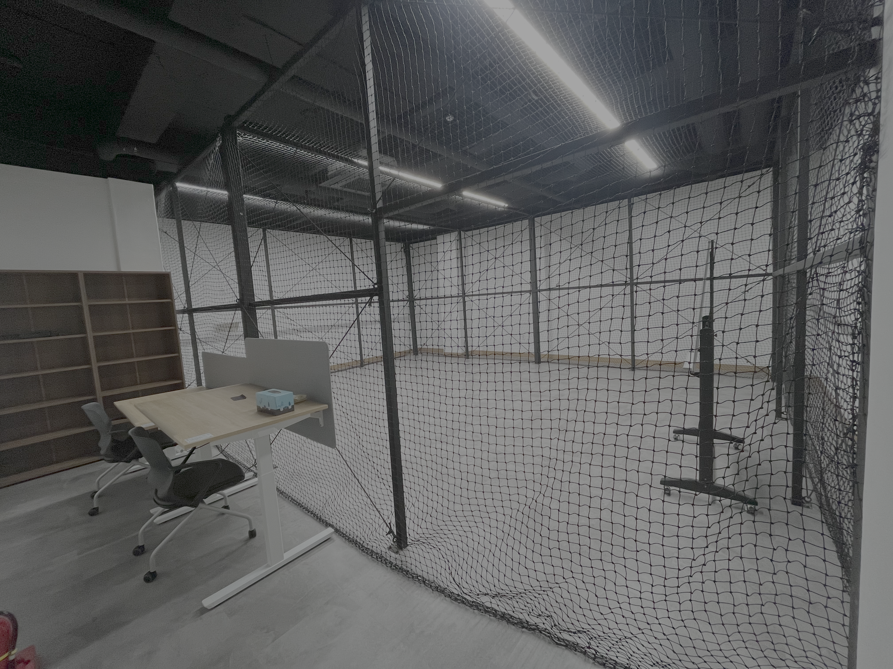
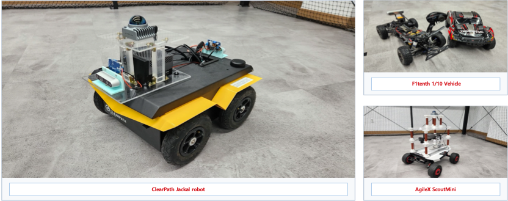
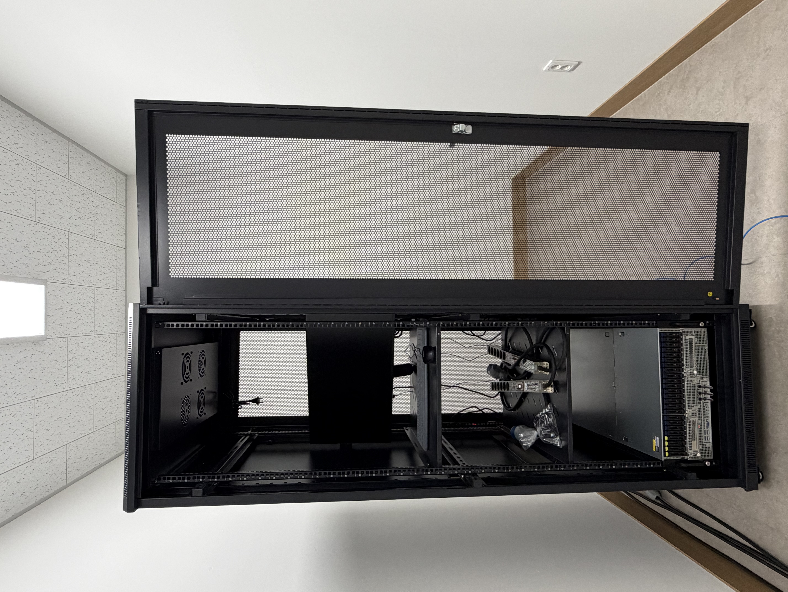
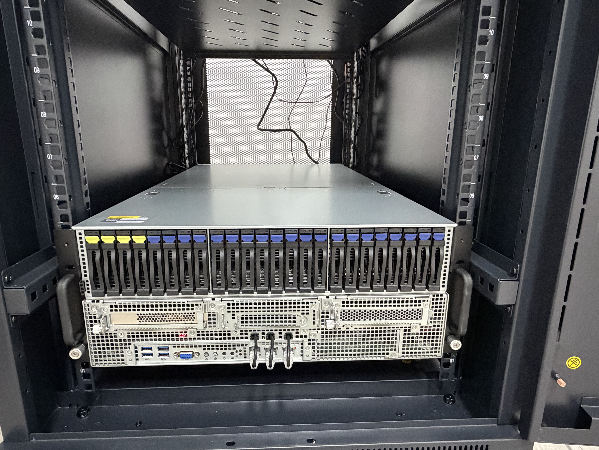

Facilities

Indoor Drone & Robot Test Room
Our lab is equipped with a dedicated indoor test room for drone and ground robot experiments. The space supports controlled flight and locomotion experiments in a safe, repeatable environment. The room includes a motion capture system for precise 6-DOF pose tracking, serving as ground-truth infrastructure for evaluating autonomous navigation and control algorithms.

Robotic Platform Lineup
IRDL operates multiple ground robotic platforms to validate algorithms across different scales and dynamics. The annotated platform image highlights the lab's core testbeds for learning-based navigation, spatial perception, and adaptive control research.


AI Computing Server
The AI server supports compute-intensive research workflows including deep learning, reinforcement learning, robot perception, and simulation-based algorithm development.